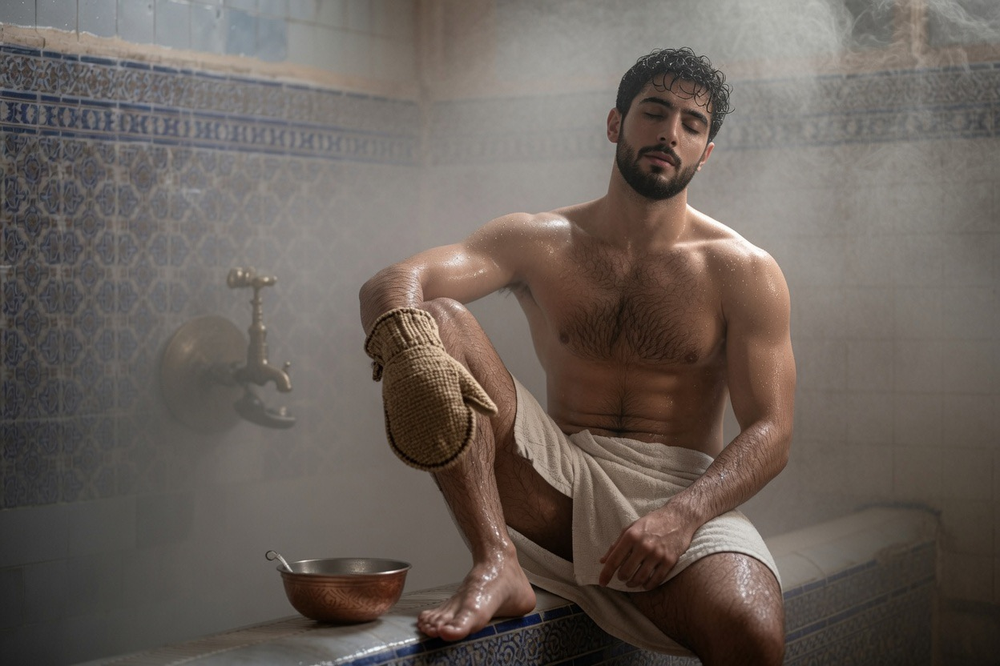
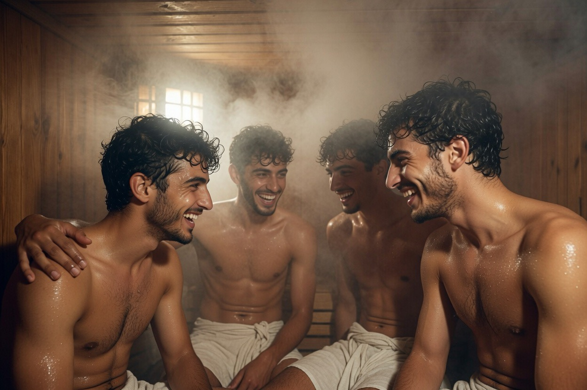
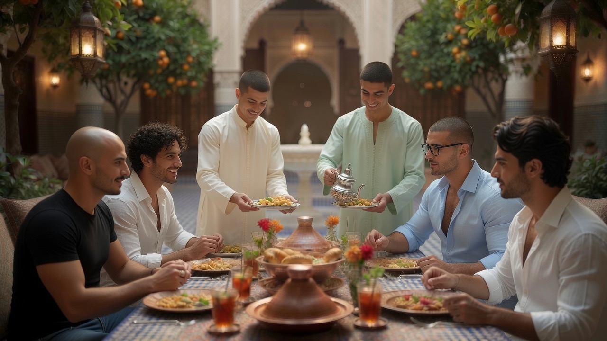
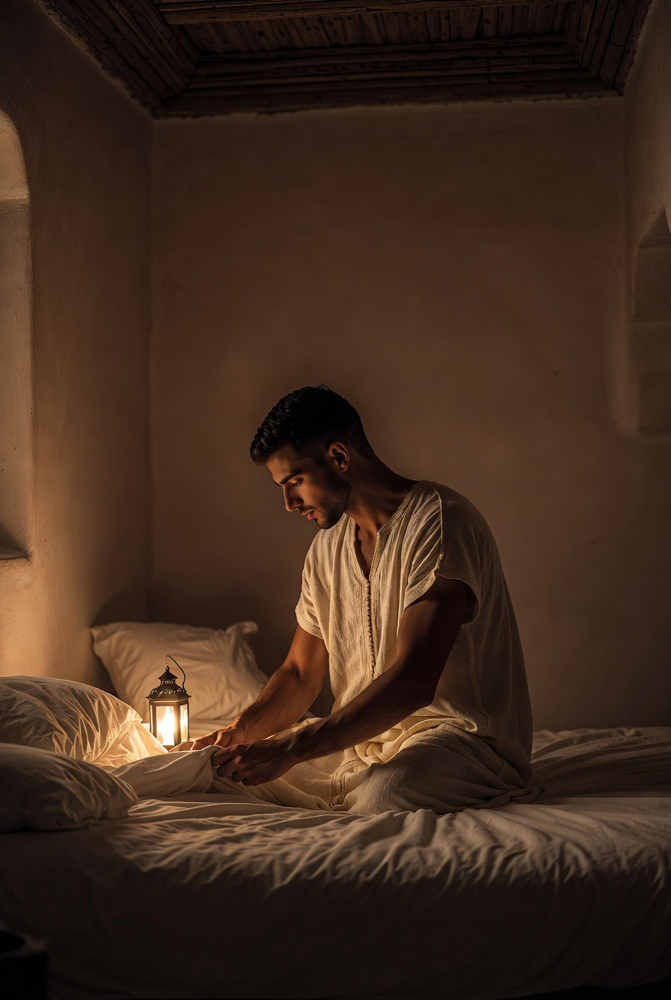

Expériences
Ce ne sont pas des produits touristiques. Ce sont des gestes de la maison, proposés avec mesure aux hôtes sélectionnés — et vécus d’abord par ceux qui y résident.

L’hôte n’achète pas un service. Il est invité, pour un temps limité, à entrer dans le rythme d’une maison vivante : prière, travail, silence, beauté des matières.
Dans la culture de la maison, l’accueil est un geste ancien. Certaines expériences restent réservées à ceux qui y vivent ; d’autres sont ouvertes, avec mesure, à l’hôte sélectionné. L’enjeu n’est pas de consommer une ambiance, mais d’entrer — brièvement — dans une forme de vie.

Hammam
Rituel de purification : chaleur, vapeur, eau, silence. Selon l’usage ancien. L’espace appartient d’abord à la vie de la maison ; l’accès des hôtes reste sélectif et marginal.
ضدانِ ينعمُ جسمُ المرءِ بينهما
كالغصنِ ينعمُ بين الشمسِ والمطرِ
« Deux contraires où le corps trouve le bien-être,
comme le rameau entre soleil et pluie. »
Poésie andalouse — XIe–XIIe siècle

Sauna
Chaleur sèche, retrait, récupération du corps. Intégrée à l’architecture, sans langage spa. Destinée en priorité à ceux qui s’y forment.

Métiers & gestes
Initiation courte aux savoir-faire : calligraphie, zellige, bois. Toucher la matière, respecter le temps du geste. Non un atelier-spectacle : une présence dans le travail réel de Dar al-Hiraf.

Cuisine & table
Repas partagés, produits du potager, cuisine marocaine de tradition. La table est un lieu de beauté, de retenue et de présence. On mange ensemble, sans bruit inutile — et le goût des mets se mêle à celui de la compagnie.
ولذّةُ العيشِ ما دامتْ مُؤانسةً
بينَ النديمِ وبينَ الكأسِ والطَّرَبِ
« La douceur de vivre dure tant que dure la compagnie —
entre l’ami, la coupe et le chant. »
Abū Nuwās — IIe / VIIIe s.

Musique & chant
Oud, ney, bendir, voix. Écoute ou participation discrète, selon les jours. Le rythme forme autant que le silence. Jamais un spectacle : une pratique de la maison.
شربنا على ذكرِ الحبيبِ مدامةً
سكرنا بها من قبلِ أن يُخلقَ الكرمُ
« En mémoire de l’Aimé nous bûmes un vin ;
nous en fûmes ivres avant que la vigne fût créée. »
Ibn al-Fāriḍ — XIIe–XIIIe siècle

Présence & conversation
Le soir, sous les lanternes, le temps ralentit. Après le coucher du soleil — et parfois jusqu’au fond de la nuit — la conversation entre amis devient un art : retenue, complicité, présence. Quelques paroles, beaucoup de silence.
وكم ليلةٍ قد بتُّ أسمرُ عندَهم
إلى أن تجلّى الصبحُ عن ليلهِ الدُّجى
« Combien de nuits j’ai veillé à leurs côtés,
jusqu’à ce que l’aube dévoile l’obscurité de la nuit. »
Abū Nuwās — IIe / VIIIe s.

Silence & rythme
Moments de prière, de lecture, de promenade dans le jardin. L’expérience la plus rare : le temps non fragmenté. Ici, le silence n’est pas une absence de bruit — c’est une présence. Il structure la journée autant que le travail ou le repas.
La prière marque le rythme ; la lecture, le regard ; le jardin, le souffle. Rien n’est programmé comme un « moment bien-être ». Tout découle de l’ordre de la maison : se lever, travailler, se taire, marcher entre les roses et l’oranger, laisser le corps et l’esprit reprendre leur mesure.
L’hôte est invité à entrer dans ce rythme — non à le consommer comme un décor. C’est la forme la plus discrète, et la plus exigeante, de l’hospitalité.
وما الصمتُ إلا في الرجالِ متاجرُ
وتاجرُهُ يعلو على كلِّ تاجرِ
« Le silence est un commerce pour les hommes ;
celui qui le pratique s’élève au-dessus de tout marchand. »
al-Shāfiʿī — VIIIe–IXe siècle
لَعَمْرُكَ ما شيءٌ من العيشِ كلِّهِ
أقرَّ لعيني من صديقٍ موافقِ
« Par ta vie, rien dans toute l’existence
ne réjouit mon regard comme un ami véritable. »
Abū al-ʿAtāhiya — VIIIe–IXe siècle
لقد صار قلبي قابلاً كلَّ صورةٍ
فمرعىً لغزلانٍ وديرٌ لرهبانِ
« Mon cœur est devenu capable de toute forme :
pâturage pour les gazelles, cloître pour les moines. »
Ibn ʿArabī — XIIe–XIIIe siècle
Ces expériences sont proposées aux hôtes sélectionnés et, dans une mesure adaptée, aux résidents. Elles ne constituent pas un « produit » : elles sont l’expression naturelle de la vie du Riad.
Séjourner au Riad